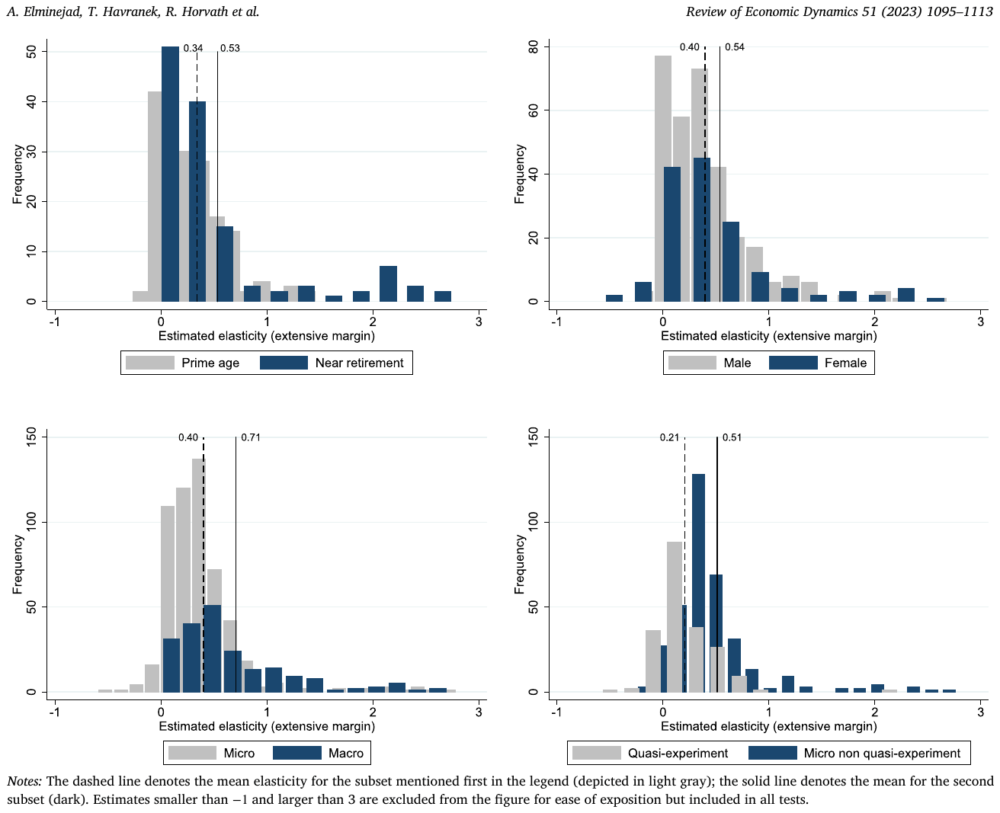
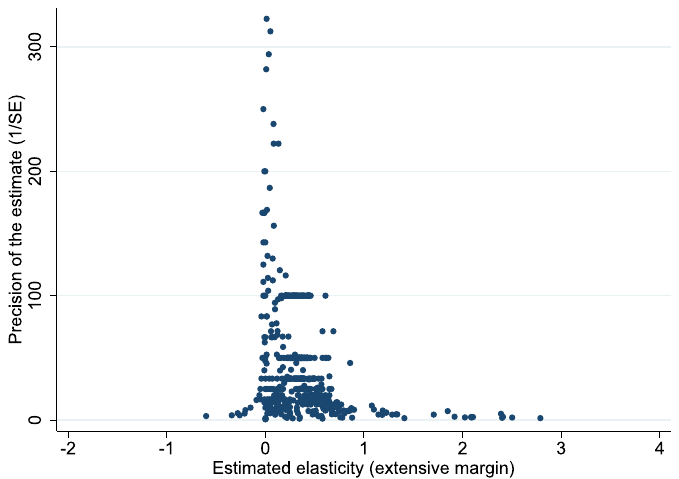
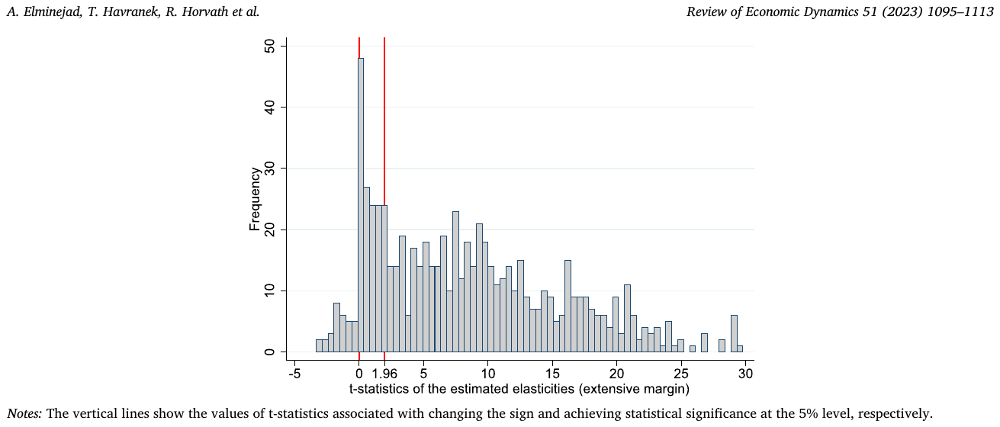
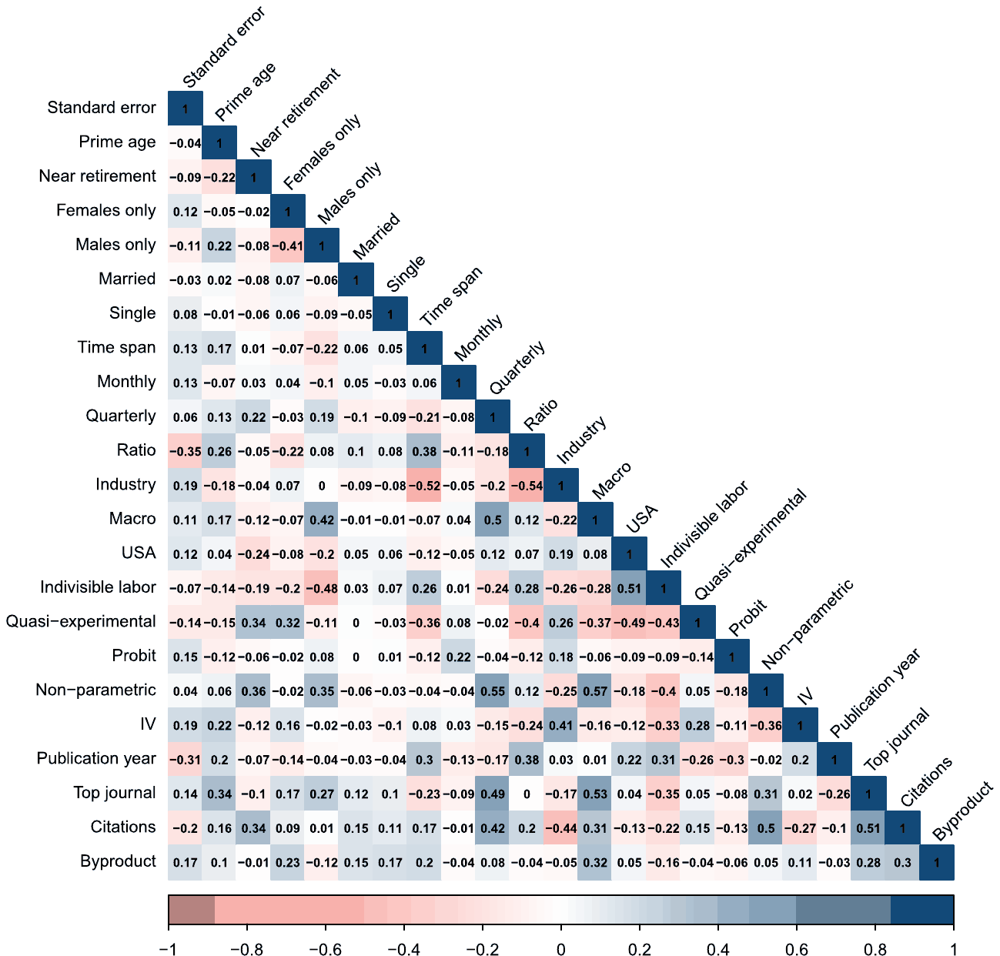
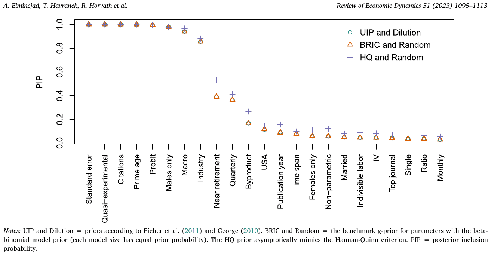

Intertemporal Substitution in Labor Supply: A Meta-Analysis
Ali Elminejad, Tomas Havranek, Roman Horvath, and Zuzana Irsova (2023), "Intertemporal Substitution in Labor Supply: A Meta-Analysis." Review of Economic Dynamics 51, 1095-1113. https://doi.org/10.1016/j.red.2023.10.001.
Ali Elminejada, Tomas Havraneka,b,c, Roman Horvatha, Zuzana Irsovaa,*
aInstitute of Economic Studies, Faculty of Social Sciences, Charles University, Prague, Czechia; bCentre for Economic Policy Research, London, UK; cMeta-Research Innovation Center at Stanford, USA
JEL CLASSIFICATION C83; E24; J21
Abstract
The intertemporal substitution (Frisch) elasticity of labor supply governs how structural models predict changes in people's willingness to work in response to changes in economic conditions or government fiscal policy. We show that the mean reported estimates of the elasticity are exaggerated due to publication bias. For both the intensive and extensive margins the literature provides over 700 estimates, with a mean of 0.5 in both cases. Correcting for publication bias and emphasizing quasi-experimental evidence reduces the mean intensive margin elasticity to 0.2 and renders the extensive margin elasticity tiny. A total hours elasticity of about 0.25 is the most consistent with empirical evidence. To trace the differences in reported elasticities to differences in estimation context, we collect 23 variables reflecting study design and employ Bayesian and frequentist model averaging to address model uncertainty. On both margins the elasticity is systematically larger for women and workers near retirement, but not enough to support a total hours elasticity above 0.5.
Keywords: Frisch elasticity; Labor supply; Meta-analysis; Publication bias; Bayesian model averaging
1. Introduction
The Frisch elasticity of labor supply, the change in hours worked in response to changes in anticipated wages while keeping the marginal utility of wealth unchanged, plays a key role in answering a variety of economic questions. For example, how does labor supply react to technological shocks over the business cycle? How does a temporary tax increase affect the economy? And in general, what are the effects of fiscal policy?
For calibrations of the elasticity in structural models, researchers have increasingly relied on the entire corpus of microeconomic empirical literature instead of cherry-picking one or two preferred results. A prominent example is the life-cycle model of the Congressional Budget Office (CBO), which relies on a careful survey of microeconomic evidence to calibrate the elasticity in the range 0.27–0.53 with a central estimate of 0.4 (Whalen and Reichling, 2017). While the CBO's central estimate is conservative and less than half the value of an earlier widely used survey of quasi-experimental evidence (Chetty et al., 2013), which suggested total hours Frisch elasticity of about 0.9, in this paper we show that even 0.4 is probably too large. The mean estimate reported in the literature is a systematically biased reflection of the underlying research results. For example, the Chetty et al. (2013) finding of a 0.9 total hours elasticity matches our data remarkably well: the mean estimate in our dataset is 0.5 for both the intensive and extensive margins. Nevertheless, these summary statistics in our data are heavily distorted by publication bias and endogeneity in some studies. Conditional on the absence of publication bias and the availability of arguably exogenous time variation in wages, the literature is consistent with a tiny Frisch elasticity at the extensive margin (related to the decision whether to work) and an elasticity of 0.2 at the intensive margin (how much to work), consistent with about 0.25 for the total elasticity.
Publication bias does not equal cheating and arises naturally in the empirical literature even if all researchers are honest.1 In some fields it can be addressed by the preregistration of research projects (Olken, 2015), though it is unclear whether the preregistration solution is effective outside controlled experimental research. With observational data, many researchers will write their preregistration protocols after inspecting the data or even after running preliminary analyses. Publication bias is thus a fact of life in empirical research, and it is the task of those who analyze the literature to correct for the bias. In the context of the Frisch elasticity two thresholds can potentially affect the publication probability of an estimate. First, the threshold at zero: negative estimates are economically nonsensical. Since the true elasticity cannot be negative, researchers may consider negative estimates as indicators of problems in their data or models. But negative estimates are statistically plausible given sufficient noise because few estimators of the elasticity are explicitly bounded at zero. When negative estimates are underreported, an upward bias arises in the literature since there is no psychological upper bound that would mirror and compensate for the lower bound at zero.
Second, the threshold at the t-statistic of 1.96: two stars accompanying the regression estimate indicate that the elasticity is really far away from zero and safely in the territory prescribed by the theory. For better or worse, statistical significance has sometimes been used as an indicator of the importance of the result—and, for example, the result's usefulness for calibration. McCloskey and Ziliak (2019) provide an analogy to the Lombard effect in psychoacoustics: speakers involuntarily increase their effort with increasing noise. Similarly researchers may increase their efforts (searching through different subsets of data, models, and control variables) in response to noise in the data in order to find larger estimates and offset standard errors. With little noise and small standard errors, little or no specification search is needed to produce statistical significance. With strong noise, strong selection is required. Once again, an upward bias in the mean reported elasticity emerges as a consequence.2
Our principal identification assumption in this paper is that publication bias gives rise to a positive correlation between estimates and standard errors, a correlation that does not exist in the absence of the bias. For a selection rule associated with the statistical significance threshold, the correlation arises directly from the Lombard effect. For a selection rule associated with the threshold at zero, the correlation stems from heteroskedasticity: because the true elasticity is positive, with little enough noise (and thus high enough precision) the estimates are always positive. As noise and standard errors increase, negative estimates appear from time to time but are hidden in the file drawer. Large positive estimates, which are also far away from the true value, are reported. A regression of estimates on standard errors thus yields a positive slope. (For simplicity, here we abstract from heterogeneity in the underlying elasticity for different context and individuals, which can of course affect the correlation and will be discussed and addressed later.)
The lack of correlation between estimates and standard errors in the absence of bias is a property of the methods used by the authors of the primary studies themselves. Consider, for example, the common fact that estimates are accompanied by t-statistics. Standard inference on the t-statistic makes sense only if t-statistics are symmetrically distributed. Since the t-statistic is a ratio of the point estimate to the corresponding standard error and since the symmetry property implies that the numerator and denominator are statistically independent quantities, it follows that estimates and standard errors should not be correlated. The identification assumption can be violated in economics (for example, unobserved methods choices in primary studies may systematically affect both estimates and their standard errors),3 and we thus relax the assumption via instrumenting the standard error by a function of the number of observations and via using a new p-uniform∗ technique recently developed in psychology (van Aert and van Assen, 2023) that works with the distribution of p-values instead of estimates and standard errors. The inverse of the square root of the number of observations is a natural instrument for the standard error because both quantities are correlated by the definition of the latter, and the number of observations is unlikely to be much correlated with most method choices in economics. The p-uniform∗ technique does not assume anything about the relation between estimates and standards errors but uses the statistical principle that the distribution of p-values is uniform at the true mean effect size.
A fact well known in the Frisch elasticity literature is that, for the extensive margin, macro data tend to bring larger estimates than micro data (Chetty et al., 2013). We generalize this stylized fact by showing that studies less likely to exploit genuine exogenous time variation in wages (unrelated to human capital accumulation and labor supply) are more likely to report large estimates of the elasticity. Thus the smallest extensive margin elasticities are reported by studies using tax holidays, followed by other quasi-experimental studies using policy changes, often for occupations such as taxi drivers where exogenous variation in wages is more likely. Studies using micro but non-quasi-experimental data tend to show larger elasticities, and the elasticities in macro studies are larger still. A frequent problem attributed to macro studies, but also micro studies that do not exploit policy changes staggered across several years, is the impossibility to disentangle voluntary and involuntary entries to and exits from employment. In a boom, more people can get employed simply because employers demand more labor, not just because workers choose to substitute work to the present from the past or the future in response to temporarily higher wages (Hall, 2009). We show that the ensuing identification bias is just as important as publication bias in the literature on the extensive margin Frisch elasticity. After correcting for both biases we find that the literature is consistent with a tiny elasticity. In contrast, the implied elasticity at the intensive margin is about 0.2.
The mean elasticity is often informative for the calibration of representative-agent models, but a small elasticity on average does not imply that workers do not substitute their labor intertemporally. Heterogeneity is important, as stressed by Attanasio et al. (2018), who even question the usefulness of thinking about "the" aggregate labor supply elasticity as a structural parameter. We control for both underlying heterogeneity (for example age, gender, and marital status) and method heterogeneity (for example time span, data frequency, and use of instrumental variables). In total we collect 23 characteristics that reflect the context in which the estimate was obtained, and we assess which variables are effective in explaining the differences in reported elasticities. For many of the method variables no established theory exists that would mandate their inclusion in the model, but anecdotal evidence still suggests they can systematically influence the reported Frisch elasticities. Hence we face substantial model uncertainty, a natural response to which in the Bayesian framework is Bayesian model averaging (see Steel, 2020, for a detailed description). Given the number of variables and need to interpret individual marginal effects, we implement Bayesian model averaging with the dilution prior suggested by George (2010), which addresses potential collinearity. As a robustness check, we use frequentist model averaging with Mallow's weights (Hansen, 2007) and orthogonalize covariate space based on the approach of Amini and Parmeter (2012).
Our results regarding publication and identification biases are robust to controlling for heterogeneity in the estimated elasticities. We also corroborate the stylized fact that women and workers near retirement display more elastic responses than men and prime age workers. Extensive margin elasticities estimated for specific industries tend to be larger than elasticities estimated for the entire economy, which is consistent with the fact that exogenous variation in wages can often be observed for occupations that are also likely to be more elastic in terms of intertemporal substitution (such as taxi drivers). Studies reporting larger estimates tend to get more citations, but it is unclear whether the correlation reflects higher quality or more convenience for calibration—larger elasticities make it often easier to match macroeconomic data. As the bottom line of our analysis, we use all the intensive and extensive margin elasticity estimates from primary studies and the model averaging exercise to compute fitted values of the elasticity conditional on a hypothetical ideal study in the literature (for example, using maximum time spans, fresh and large data, quasi-experimental design, instrumental variables to tackle measurement error, and surviving the peer review of a top five journal in economics). The mean resulting intensive margin elasticity is around 0.2, while the elasticity is tiny for the extensive margin. A value of 0.25 for the total elasticity is the one most consistent with the literature. The total elasticities corresponding to women and workers near retirement are around 0.3–0.4.
Two previous studies are closely related to our paper. First, Chetty et al. (2013) provide a meta-analysis of labor supply elasticities at the extensive margin. The main part of their dataset includes Hicks elasticities; they use 6 estimates of Frisch elasticities from 6 quasi-experimental studies. Given the focus on 6 estimates, Chetty et al. (2013) cannot examine publication bias. Second, Martinez et al. (2021) use the natural experiment of tax holidays in Switzerland to estimate the Frisch elasticity. Because of their high-quality dataset and the fact that the tax holidays were staggered across cantons, they are able to explore arguably exogenous time variation in net wages among the general population. Our results are similar qualitatively to Martinez et al. (2021): intertemporal substitution is negligible at the extensive margin and small at the intensive margin. Quantitatively, though, Martinez et al. (2021) find a total hours elasticity of 0.025, while our estimate is an order of magnitude larger, about 0.25. Both numbers are very far from common calibrations of macroeconomic models. It is important to stress, however, that micro elasticities may not be fully relevant for aggregate outcomes because of aggregation and heterogeneity issues (Attanasio et al., 2018). For example, in models with heterogeneity the distribution of reservation wages matters, and it is possible to obtain large aggregate responses despite low micro elasticities.
A qualification is in order regarding the object under examination in the empirical literature on the Frisch elasticity. Conceptually, the elasticity represents the preferences of households. But researchers, even when blessed with high-quality quasi-experimental data, observe labor market outcomes that are also affected by salience and frictions (Chetty et al., 2009; Chetty, 2012; Sigurdsson, 2023b). It may be that workers have relatively elastic labor supply preferences but do not change their behavior because they are not sufficiently attentive to the change in net wages or because they face substantial adjustment costs, search frictions, or liquidity constraints. The literature does not provide enough information to allow us to disentangle the correct Frisch elasticity from the confounding effects of salience and frictions. Conceptually, this is an important limitation of our analysis (and the empirical literature on labor supply elasticities). In practice, however, the reduced-from elasticities that we cover are informative regarding the real-world behavior of households with respect to temporary changes in wages.
This paper includes two meta-analyses: one for the extensive margin, the other for the intensive margin. Because these are economically distinct concepts, they cannot be reasonably pooled together in one meta-analysis. To avoid duplicating meta-analysis outputs and discussion, in the main text we focus on the extensive margin, for which quasi-experimental evidence is more abundant; the meta-analysis of intensive margin elasticities is available in the online appendix. The meta-analysis methods in both parts are identical, and any substantial differences in results are discussed in the main text. Subsection 4.4 in the main body of the paper summarizes the results of both meta-analyses.
| Aaronson and French (2009) | Ham and Reilly (2002) |
|---|---|
| Altonji (1986) | Inoue (2015) |
| Angrist (1991) | Karabarbounis (2016) |
| Angrist et al. (2021) | Keane and Wasi (2016) |
| Attanasio et al. (2018) | Kimmel and Kniesner (1998) |
| Battisti et al. (2023) | Kneip et al. (2019) |
| Beffy et al. (2019) | Kuroda and Yamamoto (2008) |
| Blundell et al. (2016a) | Lee (2001) |
| Blundell et al. (2016b) | Looney and Singhal (2006) |
| Borella et al. (2023) | MaCurdy (1981) |
| Bredemeier et al. (2019) | Martinez et al. (2021) |
| Caldwell and Oehlsen (2022) | Ong (2019) |
| Chang et al. (2011) | Peterman (2016) |
| Domeij and Floden (2006) | Pistaferri (2003) |
| Erosa et al. (2016) | Saez (2003) |
| Farber (2015) | Sigurdsson (2023a) |
| Fiorito and Zanella (2012) | Stafford (2015) |
| French (2005) | Theloudis (2021) |
| French and Stafford (2017) | Wallenius (2011) |
| Haan and Uhlendorff (2013) | Ziliak and Kniesner (2005) |
| Attanasio et al. (2018) | Haan and Uhlendorff (2013) |
|---|---|
| Beffy et al. (2019) | Inoue (2015) |
| Bianchi et al. (2001) | Karabarbounis (2016) |
| Blundell et al. (2016a) | Keane and Wasi (2016) |
| Blundell et al. (2016b) | Kimmel and Kniesner (1998) |
| Borella et al. (2023) | Kneip et al. (2019) |
| Brown (2013) | Kuroda and Yamamoto (2008) |
| Caldwell (2019) | Looney and Singhal (2006) |
| Card and Hyslop (2005) | Manoli and Weber (2011) |
| Carrington (1996) | Manoli and Weber (2016) |
| Chang and Kim (2006) | Martinez et al. (2021) |
| Chang et al. (2019) | Mustre-del Rio (2011) |
| Erosa et al. (2016) | Mustre-del Rio (2015) |
| Espino et al. (2017) | Oettinger (1999) |
| Fiorito and Zanella (2012) | Ong (2019) |
| French and Stafford (2017) | Park (2020) |
| Gine et al. (2017) | Peterman (2016) |
| Gourio and Noual (2009) | Sigurdsson (2023a) |
| Gruber and Wise (1999) | Stafford (2015) |
2. Data
To search for empirical estimates of the elasticity we use Google Scholar because it provides a powerful full-text search. Our search procedure is described in the online appendix and conforms to the current protocols for meta-analysis in economics (Havranek et al., 2020; Irsova et al., 2024). If the elasticity is not explicitly reported but can be calculated from the results presented in the study, we derive the elasticity and include it in our database. (In that case the standard error of the resulting elasticity is computed using the delta method.) To increase the size of the dataset available for our analysis we also include estimates from working papers. This does not help alleviate publication bias since working papers are intended for eventual publication and any mechanisms that lead to preference for positive or significant estimates in journal articles also apply to working papers, as shown, for example, by Rusnak et al. (2013). We terminate the search on July 1, 2023, and do not add any studies beyond that date. The final sample includes 709 intensive margin estimates from 40 studies (Table 1; examined in the online appendix) and 762 extensive margin estimates from 38 studies (Table 2; examined in the main text) covering a quarter century of research on labor supply elasticities. The online appendix also provides details on how the elasticities are estimated and how we collected estimates from individual papers.
Fig. 1 shows the distribution of Frisch elasticities at the extensive margin reported in the literature. The mean (0.48) is substantially larger than the median (0.35), but overall the literature appears to be quite consistent with the CBO's calibration at 0.4 (which, however, takes into account both the intensive and extensive margins). We also observe that the economically impossible negative estimates sometimes appear in the literature but are very rare: a large break in the distribution of elasticities occurs at 0. That, and the skewness of the distribution with a relative abundance of elasticities above 1, is indicative of potential publication bias—but little about its size and importance can be said based on a simple histogram. The dataset includes a couple of outliers on both sides of the distribution, so we winsorize the data at the 5% level. Using the outliers at their face value or omitting them from the analysis does not change our main results qualitatively.
Figure 1. Estimates are most commonly around 0.4. Notes: The solid line denotes the sample mean (0.48); the dashed line denotes the sample median (0.35). Estimates smaller than −1 and larger than 3 are excluded from the figure for ease of exposition but included in all tests. The figure is in the PDF.
In addition to the reported estimates and their standard errors, we collect extensive information on the context in which the estimates were obtained (22 variables in total). We control for demographic characteristics by including dummy variables reflecting whether the reported elasticity corresponds to a specific gender or age group as well as marital status. Regarding data characteristics, we control for whether the frequency of the data used is annual, quarterly, or monthly. We include controls for US data, macro data, industry-specific data, and use of wage ratios. We also include dummy variables reflecting econometric techniques (e.g., probit, instrumental variables, and nonparametric methods) used in the primary studies. We control for the assumption of labor indivisibility and for quasi-experimental design. Additionally, we consider publication characteristics by controlling for study age, the number of citations, and high-quality peer-review by a top five journal in economics. Finally, we control for whether the study focuses on the Frisch elasticity or whether it reports the elasticity as a byproduct of other computations. More details on these variables are available in Section 4.
An important variable for meta-analysis is the standard error of the reported estimate. Nevertheless, for some estimates in our sample standard errors are not reported. To approximate standard errors, we apply the bootstrap resampling technique. We then combine the reported standard errors with those obtained from resampling. Our main results hold if we simply discard the estimates for which standard errors are not explicitly reported. Fig. 2 shows four stylized facts in the data. Women and workers near retirement display larger elasticities than men and prime-age workers, which is intuitive and consistent with much of the previous literature. But the differences between women and men and between prime-age and near-retirement workers are surprisingly small, around 0.14 for gender and 0.19 for age. A larger difference arises between estimates using micro (0.40 on average) and macro data (0.71). Note that we consider only macro estimates that explicitly try to estimate the elasticity at the extensive margin; in general, macro estimates of the total hours Frisch elasticity tend to be even larger, and the large difference in results is well documented (Chetty et al., 2013). Finally, there is a substantial difference between micro estimates based on quasi-experimental data (0.21 on average) and non-quasi-experimental data, which use variation in taxes or wages in the absence of significant policy shifts (0.51). These stylized facts suggest both genuine differences in the elasticity (which are however modest) and the importance of proper identification. Studies more likely to exploit truly exogenous time variation in wages are also likely to report small estimates of the elasticity. But so far we have ignored the potential upward bias stemming from the selective reporting of positive and statistically significant estimates, an issue to which we turn next.
3. Publication bias
Publication bias forces a wedge between the distribution of results obtained by researchers and the distribution of results reported by those researchers in their papers. The reported coefficients are typically larger in magnitude. To see this, consider that many effects in economics are constrained by theory to be either positive or negative. The Frisch elasticity, of course, cannot be negative, and thus negative estimates are suspicious and rarely reported. But if the true elasticity is positive and small, negative estimates will appear naturally from time to time using a method such as OLS that does not constrain the results to be positive. So a negative estimate does not necessarily imply that something is wrong with the model or the data; rather, it suggests that the underlying effect is small, estimation is imprecise, or both at the same time. In practice, the preference against negative estimates is taken a step further and leads to a preference for statistically significant positive estimates. Such estimates are sufficiently far away from the zero threshold, and statistical significance is often misused as a proxy for importance and precision. If statistical significance is the implicit or explicit goal of a researcher, it can usually be achieved by trying a sufficient number of different estimations with different methods, different subsets of data, and different control variables. At some point the researcher typically finds an estimate that is large enough to compensate the standard error and produce a t-statistic above 1.96. In both cases of selection (based on sign and on significance) an upward bias arises.

Publication bias can be assessed visually using the so-called funnel plot (Fig. 3). It is a scatter plot depicting the size of the estimates on the horizontal axis and their precision on the vertical axis. Intuitively, if there is no publication bias and all studies estimate the very same parameter, the most precise estimates should be close to the underlying value of the parameter. (Sometimes the mean of the 10% most precise estimates is used as a rough estimate of the underlying effect, and Stanley et al., 2010 show this simple estimator works surprisingly well. In our case the estimate derived this way is 0.25.) As precision decreases, the dispersion of estimates increases, so the figure should show an inverted funnel. An important feature of the funnel in the absence of bias is symmetry around the most precise estimates: all imprecise estimates should have the same chance of being reported. If, however, negative or small positive (and thus insignificant) imprecise estimates are underreported, the funnel becomes asymmetrical. That is what we observe in Fig. 3. The most precise estimates are close to zero, but zero is also close to the bottom end of the distribution of the reported estimates. The funnel plot is a simple device developed in medical research (Egger et al., 1997), where it is sometimes safe to assume homogeneity among studies, consider a linear relationship between bias and the standard error, and take reported precision at face value. But in economics all three issues are problematic, and we address them in this and the following section.

The asymmetry of the funnel plot can be tested explicitly by regressing estimates on their standard errors:
where denotes the -th estimate of the Frisch elasticity in the -th study, denotes the corresponding standard error, represents the size of publication bias, and can be interpreted as the peak of the funnel and thus the mean elasticity corrected for the bias (assuming that publication bias increases linearly with the standard error), an observation first made by Stanley (2005). The equation features heteroskedasticity by definition, because the explanatory variable measures the variance of the response variable. So in some applications both sides of the equations are divided by the standard error to yield a weighted least squares estimator for more efficiency. As far as we know, both the weighted and unweighted specifications were first used by Card and Krueger (1995) and formalized by Stanley (2008) and Stanley and Doucouliagos (2012). Because most of the techniques used in the literature imply that the ratio of estimates to their standard errors has a symmetrical distribution (often a t-distribution), it follows that in the absence of publication bias there should be no correlation between the two quantities.
| Panel A: Linear tests | OLS | FE | Precision | Study | MAIVE |
|---|---|---|---|---|---|
| Publication bias | 1.689*** | 0.887*** | 2.592*** | 2.173*** | 3.056** |
| (Standard error) | (0.264) | (0.271) | (0.530) | (0.227) | (1.500) |
| [1.05, 2.36] | - | [1.55, 3.86] | [1.68, 2.70] | {0.53, 6.47} | |
| Effect beyond bias | 0.288*** | 0.356*** | 0.211*** | 0.243*** | 0.350*** |
| (Constant) | (0.0442) | (0.0252) | (0.0441) | (0.0470) | (0.0463) |
| [0.11, 0.37] | - | [0.06, 0.29] | [0.15, 0.34] | {0.06, 0.74} | |
| First stage F-stat | 31.2 | ||||
| Observations | 762 | 762 | 762 | 762 | 603 |
| Studies | 38 | 38 | 38 | 38 | 23 |
| Panel B: Nonlinear tests | Ioannidis et al. (2017) | Andrews and Kasy (2019) | Bom and Rachinger (2019) | Furukawa (2021) | van Aert and van Assen (2023) |
|---|---|---|---|---|---|
| Effect beyond bias | 0.208*** | 0.354*** | 0.142*** | 0.063 | 0.365*** |
| (0.055) | (0.064) | (0.009) | (0.077) | (0.092) | |
| Observations | 762 | 762 | 762 | 762 | 762 |
| Studies | 38 | 38 | 38 | 38 | 38 |
Notes: Panel A presents the results of regression , where and are the -th estimated Frisch extensive margin elasticity and its standard error reported in the -th study. OLS = ordinary least squares. FE = study fixed effects. Precision = estimates are weighted by the inverse of their variance. Study = estimates are weighted by the inverse of the number of estimates reported per study. MAIVE = meta-analysis instrumental variable estimator (Irsova et al., 2023); the inverse of the square root of the number of observations is used as an instrument for the standard error. We cluster standard errors at the study level; if applicable, we also report 95% confidence intervals from wild bootstrap clustering in square brackets. For MAIVE, in curly brackets we show the weak-instrument-robust Anderson-Rubin 95% confidence interval. Panel B presents the mean elasticity corrected for publication bias using nonlinear techniques described in the main text. * , ** , *** .
Panel A of Table 3 presents the results of estimating (1). Because most studies report more than one estimate of the elasticity, we cluster standard errors at the study level. Moreover, because the number of clusters is relatively limited (38 studies) we additionally report confidence intervals based on wild bootstrap where applicable. (For the instrumental variable estimator described later we instead report the weak-instrument-robust Anderson-Rubin confidence interval.) In addition to OLS we use study fixed effects to account for heterogeneity across studies and two weighted least squares specifications: one divides the equation by the standard error to increase efficiency, the other weights the equation by the inverse of the number of estimates reported per study in order to assign each study the same weight.
The last column of panel A addresses potential endogeneity of the standard error. The endogeneity can have at least three sources. First, the standard error is itself estimated, and this measurement error yields attenuation bias (a problem already mentioned by Stanley 2005). Second, publication selection can work on the standard error instead of the point estimate; for example, authors may choose a method that delivers statistical significance via a higher reported precision (for example, when clustering is ignored), which leads to reverse causality. Third, some method choices can influence both estimates and standard errors systematically. For example, aside from correcting a potential endogeneity problem in the point estimate, the use of instrumental variables (IV) in primary studies typically increases standard errors. While we do not see a bulletproof remedy of the endogeneity problem in meta-analysis, an appealing solution is to use the inverse of the square root of the study's number of observations as an instrument for the standard error. This is a strong instrument by the definition of the standard error (and the robust F-statistic in the first-stage regression is 31). It addresses the attenuation bias problem because the number of observations is not estimated. It addresses the reverse causality problem because a researcher cannot easily increase the number of observations just to increase significance. While some method choices can be related to the number of observations, many are independent (such as IV vs. OLS), and the instrument thus addresses the third endogeneity problem as well.
All the results in panel A of Table 3 suggest that estimates and standard errors are correlated. The point estimates of the slope coefficient range from 0.9 (fixed effects) to 3.1 (instrumental variables). Confidence intervals based on wild bootstrap range from 1 to 4, and the median estimate is 2.2. Three out of the five techniques suggest a slope coefficient above 2. Overall, it seems that 2 is a relatively conservative estimate for the slope coefficient, which translates to strong publication bias. To see this, consider a hypothetical case in which the true elasticity was zero. Then the true mean t-statistic should be zero as well. But a slope coefficient of 2 in meta-regression is consistent with a mean reported t-statistic of 2 since in such a case point estimates are on average twice the standard error. So a slope of 2 would suggest a positive and significant reported effect on average even in the absence of an underlying effect: a dramatic change in inference due to publication bias. Next, as we have noted, the constant in the regression can be interpreted as the mean elasticity corrected for publication bias. The estimates range from 0.21 (precision-weighted specification) to 0.36 (fixed effects) with a median estimate of 0.29 and bootstrapped confidence intervals from 0.1 to 0.4. These results imply that publication bias exaggerates the mean elasticity almost twofold.
A problem of the funnel asymmetry test we have not yet addressed is the assumption that publication bias is a linear function of the standard error. The assumption is tenuous for small standard errors if the underlying elasticity is not zero. Consider, for example, the case when the true Frisch elasticity at the extensive margin is 0.29. When there is little noise in the data and the estimation method is sufficiently precise, the standard error will be very small: say 0.01. Then researchers will always obtain a positive and statistically significant estimate of the Frisch elasticity, and there is no reason why publication bias should arise. If the standard error is, for example, 0.02 or 0.05, the situation will not change. Publication bias will probably appear with standard errors around 0.14 and after that it may well be linearly increasing in the standard error via the mechanism described in the previous paragraphs.
Several authors have recently addressed the nonlinearity of the funnel asymmetry test, and we use a battery of these modern techniques in panel B of Table 3. First, we employ the method introduced by Ioannidis et al. (2017), which only uses estimates that display statistical power of at least 80% and computes the average of these estimates weighted by inverse variance. Stanley et al. (2017) show using Monte Carlo simulations that their technique often performs better than classical meta-analysis estimators. Second, Andrews and Kasy (2019) introduce a selection model which estimates the likelihood that negative and insignificant elasticities will be reported and then re-weights the reported estimates using the computed probabilities. Third, Bom and Rachinger (2019) assume that the relation between estimates and standard errors is nonexistent for very small standard errors and then attains a linear form discussed in the previous paragraph; the kink is estimated endogenously in the model.
Fourth, Furukawa (2021) exploits the trade-off between publication bias and variance: the most precise studies suffer less from selective reporting, but ignoring less precise studies is inefficient. His nonparametric technique estimates the share of the most precise studies that should be used for computing the corrected mean. Fifth, van Aert and van Assen (2023) do not assume anything about the correlation between estimates and standard errors, neither do they consider more precise studies to be less biased. Their technique, p-uniform*, uses the statistical principle that the distribution of p-values should be uniform at the true mean effect size. The technique is robust to heterogeneity and, by definition, also to the endogeneity of the standard error in the funnel asymmetry test.
The results of the nonlinear techniques are similar to the results reported previously for the funnel asymmetry tests but suggest an even smaller corrected mean elasticity. In all cases the mean corrected for publication bias is smaller than the simple reported mean of 0.49: estimates range from 0.06 (Furukawa, 2021) to 0.37 (van Aert and van Assen, 2023). The median estimate for the nonlinear techniques is 0.21, compared to the 0.29 value in the previous panel: together, the two panels suggest that 0.25 is a reasonable estimate for the mean Frisch elasticity at the extensive margin. We conclude that publication bias in the literature is substantial and likely to exaggerate the mean reported elasticity approximately twofold. The online appendix shows that the findings are similar for intensive margin elasticities, implying only slightly smaller publication bias. As an aside, we show in Fig. 4 that the bias is caused by the preference for positive sign, not statistical significance. The density of t-statistics jumps remarkably at zero, but no such jump can be seen around . The pattern is so clear that statistical tests are unnecessary—although caliper tests according to Gerber et al. (2008) and Elliott et al. (2022), not reported here, confirm the observation.
In our baseline analysis we pool together structural and quasi-experimental estimates of the elasticity. The online appendix shows the analysis of publication bias separately for the subsample of quasi-experimental estimates. The implied values for the corrected mean Frisch elasticity are smaller than in the entire sample, around 0.15. Note that quasi-experimental data are often examined for demographic groups (women, workers near retirement) that are likely to display a larger elasticity than the population as a whole; in the next section we will derive an estimate conditional on quasi-experimental data for the general population. Regarding structural estimates of the elasticity, Keane and Neal (2023) show that with instrumental variables, point estimates are correlated with standard errors, and the correlation depends on instrument strength. We find some tentative evidence that the correlation may be stronger with weaker instruments. A mechanical correlation between estimates and standard errors is a grave problem for almost all meta-analysis methods. As we have noted, two of our techniques allow for such a correlation in the absence of publication bias. First, the MAIVE approach due to Irsova et al. (2023), in which a function of sample size is used as an instrument for the standard error. But MAIVE may not fully address the problem because sample size is related to instrument strength. The p-uniform* approach, described and reported earlier, is a more promising remedy in this case since it relies on identification unrelated to the correlation between estimates and standard errors.

4. Heterogeneity
We have shown that in the literature on the Frisch elasticity publication bias is important. But what appears like publication bias can in fact be an artifact of heterogeneity. We have already addressed heterogeneity implicitly using three estimators: the p-uniform* technique that is robust to heterogeneity, study-level fixed effects that take into account study-level differences, and an instrumental variable model that accounts for the potential endogeneity of the standard error given by, among other things, heterogeneity. In this section we model heterogeneity explicitly, and the section has three goals: first, to ascertain whether the publication bias result is robust to controlling for various aspects of estimation context; second, to identify the factors of study design that systematically influence the reported estimates; and, third, to obtain the mean elasticities conditional on various demographic characteristics and corrected for publication, identification, and other potential biases in the literature. We introduce 22 explanatory variables (in addition to the standard error) divided into four groups: characteristics of demographics, data, specification, and publication. The variables are described in Table 4.
4.1. Variables
Demographic characteristics
A potentially important source of heterogeneity stems from the demographic characteristics of the samples used in primary studies. We define six dummy variables to control for the differences in demographics. Two variables capture workers' age: although different studies use various age groups in their estimations, two groups of workers are widely highlighted in the literature. First, prime age workers between 25 and 55 years old; second, workers near retirement age (i.e., older than 55 years). Macro and micro studies disagree regarding the magnitude of the Frisch elasticity for prime age workers. Micro studies often show near-zero elasticity, while macro studies show elasticities similar to those for the whole population (Chetty et al., 2013). On the other hand, workers near retirement typically exhibit a larger Frisch extensive elasticity than other age groups (e.g., Erosa et al., 2016; Manoli and Weber, 2016). More than one-third of collected estimates (38%) are based on either of these groups. Elasticities based on other age groups are not commonly assessed in the literature.
Next, we codify two dummy variables denoting gender. Datasets that consist of only female workers are used for 19% of estimates, 42% of the estimates correspond to male workers only. There is a consensus in the literature that employment fluctuations in response to wages are higher among female workers than among their male counterparts. Finally, two dummy variables control for the marital status of the people examined. Only 5% of estimates correspond to married workers only, and 4% for single workers only. Although we collect two extra dummy variables that capture elasticities computed for workers without children and self-employed workers, these subsamples are used rarely in the literature and the corresponding variables have very little variance. Hence we exclude them from the analysis.
| Variable | Description | Mean | SD |
|---|---|---|---|
| Frisch elasticity | The estimated extensive margin Frisch elasticity (response variable). | 0.48 | 0.63 |
| Standard error | The standard error of the estimate. | 0.10 | 0.17 |
| Demographic characteristics | |||
| Prime age | = 1 if the sample only consists of people between 25 and 55 years of age. | 0.21 | 0.41 |
| Near retirement | = 1 if the sample only consists of people older than 55. | 0.17 | 0.38 |
| Females only | = 1 if the sample consists of females only. | 0.19 | 0.39 |
| Males only | = 1 if the sample consists of males only. | 0.42 | 0.49 |
| Married | = 1 if the sample consists of married people only. | 0.05 | 0.23 |
| Single | = 1 if the sample consists of single people only. | 0.04 | 0.20 |
| Data characteristics | |||
| Time span | The logarithm of the data time span used to estimate the elasticity. | 2.23 | 0.88 |
| Monthly | = 1 if the data frequency is monthly (reference category: annual). | 0.02 | 0.14 |
| Quarterly | = 1 if the data frequency is quarterly (reference category: annual). | 0.23 | 0.42 |
| Ratio | = 1 if a wage ratio (income divided by hours) is used to estimate the elasticity, =0 if direct wage measures are used. | 0.71 | 0.45 |
| Industry | = 1 if the sample consists of workers in a specific industry (reference category: whole economy data). | 0.11 | 0.32 |
| Macro | = 1 if the estimate uses aggregated data (reference category: micro). | 0.27 | 0.44 |
| USA | = 1 if the estimate uses data for the US. | 0.66 | 0.47 |
| Specification characteristics | |||
| Indivisible labor | = 1 if the labor supply is assumed to be indivisible in the estimation framework. | 0.33 | 0.47 |
| Quasi-experimental | = 1 if the estimation framework uses quasi-experimental identification. | 0.27 | 0.44 |
| Probit | = 1 if the probit model is used for the estimate (reference category: OLS). | 0.05 | 0.22 |
| Non-parametric | = 1 if non-parametric simulation-based methods are used (reference category: OLS). | 0.37 | 0.48 |
| IV | = 1 if instrumental variable methods are used for the estimate (reference category: OLS). | 0.18 | 0.38 |
| Publication characteristics | |||
| Publication year | The logarithm of the publication year the study. | 3.47 | 0.20 |
| Top journal | = 1 if the estimate is published in a top five journal in economics. | 0.25 | 0.44 |
| Citations | The logarithm of the number of per-year citations of the study in Google Scholar. | 1.52 | 1.31 |
| Byproduct | = 1 if the information reported in the study allows for the computation of the elasticity but the elasticity is not interpreted in the paper. | 0.07 | 0.25 |
Notes: SD = standard deviation. The table excludes the definition and summary statistics of the reference categories, which are omitted from the regressions.
Data characteristics
The second category of variables covers the characteristics of the data used in estimations. We introduce a variable reflecting the time span of the data. Moreover, two dummy variables control for data frequency. We use annual data as the reference category since more than 74% of estimates employ annual data; as noted by Martinez et al. (2021), annual frequency is the relevant time frame for business cycle analysis. In addition, we control for the fact whether a wage ratio (income divided by hours) is used to estimate the elasticity; Keane (2011) notes that such an approach can contribute to attenuation bias. The dummy variable "Industry" controls for the fact whether the estimate uses data from a specific industry. About 66% of the estimates utilize datasets relevant to the US, including The Panel Study of Income Dynamics and the National Longitudinal Survey of Youth. We thus add a dummy variable for the use of US data. The majority of the estimates (73%) use individual-level data, while others use aggregate-level (macro) data. We use the former as the baseline category and define a dummy variable for the latter.
Specification characteristics
We use five variables to control for the specification of primary studies. The first variable equals one if the estimate assumes the indivisibility of labor. In this case, since people can either work full-time or be unemployed, all labor fluctuations appear at the extensive margin. Slightly more than a third of the estimates employ the indivisible labor assumption. Next, quasi-experimental estimates account for one-fourth of all estimates in the primary studies. Quasi-experimental studies yield a mean estimate of 0.21, substantially smaller than the mean estimate from the remainder of the studies (0.58). Within quasi-experimental studies, some are arguably even better specified, especially those that use data on tax holidays from Iceland and Switzerland (Stefansson, 2020; Martinez et al., 2021), and thus have the best chance to exploit exogenous time variation in net wages. But because there are few such studies, we cannot meaningfully create a separate dummy for them. Additionally, three dummy variables control for the potential effect of econometric techniques used in estimating elasticities. The baseline category is OLS, as researchers use it to estimate more than 40% of estimates. Probit models are used only in 5% of estimates, while the instrumental variables and non-parametric methods are used in 18% and 37% of estimates, respectively.

Publication characteristics
The last category of variables attempts to capture quality not reflected by the variables introduced above. First, we account for the publication year of the study—ceteris paribus, more recent studies are likely to bring improvements in data and methods that might be difficult to pin down explicitly. The next variable reflects the logarithm of the number of per-year citations of the study according to Google Scholar. We expect studies of higher quality to be quoted more frequently, but on the other hand the number of citations can also be correlated with the size of the elasticity simply because structural macro models need larger estimates of the elasticity for calibration. Next, to account for high-quality peer review, we include a dummy variable for the case when the study is published in one the top five journals. Finally, we create a variable that equals one if the estimate is either a byproduct of different analyses in the study. For example, Carrington (1996) and Brown (2013) do not directly report the estimated Frisch extensive elasticity, while Chang and Kim (2006) report the estimated Frisch extensive elasticity as a supplement.
Fig. 5 shows that correlations among the variables are not extensive. The largest correlation coefficient is 0.57, and all variance-inflation factors are below 10. But given the number of explanatory variables and need to interpret individual marginal effects in regressions, we use a method that takes potential collinearity into account (the dilution prior). Fig. 5 shows some stylized facts of the literature: for example, quasi-experimental studies tend to have relatively short time spans and are often conducted using non-US data for women and workers near retirement, macro studies often use data at the quarterly frequency, time spans used in studies have been increasing recently, and studies published in top journals tend to be frequently cited.
4.2. Estimation
The intuitive approach to model heterogeneity is to regress the reported elasticities on all the variables introduced above. But that approach is incorrect because it ignores model uncertainty: while we want to control for all of the variables introduced above, we are not sure that all of them belong to the underlying model. A simple OLS regression would result in inefficient estimates. In fact, a regression with all the variables included is only one of many millions of potential models. A natural solution to model uncertainty in the Bayesian setting is Bayesian model averaging (BMA). Using all the possible subsets of explanatory variables (i.e., , where is the number of explanatory variables), BMA runs numerous regression models. Analogous to the information criteria in frequentist econometrics, posterior model probability (PMP) is assigned to each model. PMP assesses the performance of a model (in terms of fit and parsimony) compared to other models. BMA uses weights based on PMPs to construct a weighted average over the estimated coefficients across all the models. Furthermore, posterior inclusion probability (PIP) is constructed for each variable and indicates the sum of posterior model probabilities of the models in which the variable is included. Further details on BMA can be found in, e.g., Raftery et al. (1997) and Eicher et al. (2011). BMA has been used in meta-analysis, for example, by Havranek and Irsova (2017); Havranek et al. (2017, 2018a, 2018b).
Estimating models would take days using a standard personal computer. Hence, we apply the Markov chain Monte Carlo algorithm (Madigan and York, 1995), which goes through the models with the highest posterior model probabilities. We implement BMA using the bms package developed by Zeugner and Feldkircher (2015). In the baseline specification we employ the dilution prior suggested by George (2010), which takes into account the collinearity of the variables included in each model. The prior multiplies the model probabilities by the determinant of the correlation matrix of the variables. Higher collinearity means that the determinant is closer to zero, which results in a model with little weight. Following Eicher et al. (2011), we also use the unit information prior (UIP) for Zellner's g-prior, in which the prior that all regression parameters are zero has the same weight as one observation in the data. In addition, we run a frequentist check, which is a hybrid frequentist-Bayesian model that only includes variables with PIPs higher than 0.75 obtained from the baseline BMA specification. We then estimate the model using OLS and cluster standard errors at the study level.
4.3. Results
Fig. 6 illustrates the results of Bayesian model averaging. Each column represents an individual regression model, and the models are sorted on the horizontal axis by their posterior model probabilities from the best model on the left. The vertical axis shows the explanatory variables listed in the descending order of their posterior inclusion probabilities. The blue color (darker in grayscale) indicates that the corresponding coefficient is positive, while the red color (lighter in grayscale) denotes the negative sign of the coefficient. A blank cell means that the corresponding variable is not included in the model. At first glance, Fig. 6 indicates that 8 variables seem to be systematically important in explaining the heterogeneity of the reported elasticities: these variables have high PIPs and robust signs across regression models.
Table 5 presents the numerical results of Bayesian model averaging. The left panel reports the posterior inclusion probability, posterior mean, and posterior standard deviation for each explanatory variable's regression coefficient. Excluding the intercept, four variables have PIP equal to 1, indicating that they are decisive variables (in the classification of Raftery et al. 1997); two variables are strong as their PIPs are between 0.95 and 0.99, and two can be labeled as substantial with PIPs more than 0.75 but lower than 0.95. The right panel of Table 5 shows the results of OLS, including the variables with PIP 0.75 and higher. The estimated coefficients in both panels have the same sign and similar magnitude and display the same statistical importance (PIP in BMA and its frequentist equivalent, p-value). So the results of the frequentist check are consistent with the baseline BMA.
The first important conclusion from Bayesian model averaging is that our result concerning publication bias remains robust even when we explicitly take into account the context in which the elasticity is estimated by adding extra 22 explanatory variables to our regression model. The effect of publication bias in BMA results is in line with the findings reported in the previous section. BMA results show that publication bias exaggerates the estimated Frisch extensive elasticities, confirming that the significant correlation between standard errors and estimates is not due to omitted aspects of demographics, data, specification, and publication.
Figure 6. Model inclusion in Bayesian model averaging. Notes: The response variable is the reported estimate of the Frisch elasticity of labor supply at the extensive margin. The columns denote individual models; variables are sorted by posterior inclusion probability in descending order. The horizontal axis denotes the cumulative posterior model probabilities. The estimation is based on the unit information prior (UIP) recommended by Eicher et al. (2011) and the dilution prior suggested by George (2010), which takes collinearity into account. Blue color (darker in grayscale) = the variable has a positive estimated sign. Red color (lighter in grayscale) = the variable has a negative estimated sign. No color = the variable is excluded from the given model. Table 4 presents a detailed description of all variables. The numerical results are reported in Table 5. The figure is in the PDF.
Demographics
We find that demographic characteristics affect the estimates of the Frisch extensive elasticity in different respects. First, the estimates for men tend to be smaller than those for women. Our results also suggest that estimates of the elasticity for prime age workers are systematically smaller than elasticities for other age groups, especially workers near retirement. The findings confirm the patterns in the literature shown earlier in Fig. 1 and are also in line with the consensus in the literature. Card and Hyslop (2005), Keane (2011), and Keane and Rogerson (2015), for instance, document that women and workers near retirement display relatively large elasticities since they are less attached to the labor market compared to other demographic groups.
Data characteristics
Our results indicate no systematic effect of the time span, data frequency, and definition of wages used in the primary study on the reported elasticity. We do not find evidence that the US-based estimates are systematically different from estimates reported for other countries. In contrast, elasticities obtained from macro data tend to by systematically larger than elasticities obtained from micro data, which is a stylized fact well known in the literature (Chetty et al., 2013). In addition, our analysis suggests that there is a systematic relationship between industry-specific data and reported estimates of the Frisch extensive elasticity. Industry-specific estimates are systematically larger than estimates that are not associated with particular industries, perhaps because exogenous time variation in net wages is often available for groups that are also likely to display more intertemporal substitution (such as fishermen, taxi drivers, and bike messengers).
Specifications
We find that assuming labor indivisibility is not systematically related to the size of the elasticity. The result contrasts a part of the macro literature, initiated by Hansen (1985) and Rogerson (1988), highlighting the importance of indivisible labor supply in determining the Frisch extensive elasticity. We find little evidence that either IV or non-parametric techniques used in estimating the elasticity affect the results systematically. On the other hand, elasticities estimated by the probit technique tend to be systematically larger. Finally and importantly, our results suggest that the quasi-experimental research design is a key factor for explaining the heterogeneity in the literature. Studies that do not follow the quasi-experimental approach tend to report larger estimates by 0.3 on average. This finding corroborates the pattern depicted earlier in Fig. 1.
Publication characteristics
Regarding potentially unobserved aspects of quality, our results suggest little systematic effects of publication year, publication in a top-five journal, and focus of the study (whether the study estimates the Frisch elasticity explicitly or concentrates on a different exercise and derives the elasticity only as a byproduct). In contrast, the number of citations is robustly associated with the reported elasticities, and the correlation is positive. The finding is interesting but we are unable to establish causality in this case. On the one hand, perhaps citations really serve as a good proxy for unobserved quality, and so better studies do produce larger elasticities. On the other hand, some studies can be cited more often precisely because they report larger elasticities, since larger elasticities are more convenient for the calibration of many structural macro models.
In addition to the baseline BMA we conduct a series of robustness checks. First, we employ alternative model priors and parameter g-priors. We apply the beta-binomial random model prior, which gives an equal prior probability to each model size (Ley and Steel, 2009). We also use the BRIC g-prior suggested by Fernandez et al. (2001) together with the HQ prior. Fig. 7 depicts how the posterior inclusion probabilities change when we change priors: the changes in PIPs are small. The detailed results obtained from alternative BMA settings are presented in the online appendix. Finally, we apply frequentist model averaging (FMA), which does not need priors. We use Mallow's weights (Hansen, 2007) and the orthogonalization of covariate space suggested by Amini and Parmeter (2012). The robustness checks, reported in the online appendix, corroborate our main results. Regarding the analysis of heterogeneity in intensive margin elasticities examined in the online appendix, the results are similar to those for the extensive margin in several respects: publication bias is still important and elasticities are larger for women and workers near retirement. In contrast, for the intensive margin quasi-experimental identification brings larger estimated elasticities compared to other approaches that rely on micro data.
| Response variable: Frisch elasticity (extensive margin) | Bayesian model averaging (baseline model) P. mean | Bayesian model averaging (baseline model) P. SD | Bayesian model averaging (baseline model) PIP | Ordinary least squares (frequentist check) Mean | Ordinary least squares (frequentist check) SE | Ordinary least squares (frequentist check) p-value |
|---|---|---|---|---|---|---|
| Intercept | 0.325 | NA | 1.000 | 0.289 | 0.025 | 0.000 |
| Standard error | 1.381 | 0.120 | 1.000 | 1.384 | 0.120 | 0.000 |
| Demographic characteristics | ||||||
| Prime age | -0.150 | 0.030 | 1.000 | -0.156 | 0.045 | 0.001 |
| Near retirement | 0.034 | 0.047 | 0.390 | |||
| Females only | 0.003 | 0.014 | 0.057 | |||
| Males only | -0.113 | 0.032 | 0.980 | -0.116 | 0.049 | 0.023 |
| Married | -0.002 | 0.015 | 0.047 | |||
| Single | 0.001 | 0.012 | 0.034 | |||
| Data characteristics | ||||||
| Time span | -0.002 | 0.010 | 0.073 | |||
| Monthly | 0.000 | 0.014 | 0.029 | |||
| Quarterly | 0.030 | 0.045 | 0.363 | |||
| Ratio | 0.000 | 0.008 | 0.035 | |||
| Industry | 0.128 | 0.066 | 0.859 | 0.146 | 0.062 | 0.024 |
| Macro | 0.134 | 0.051 | 0.942 | 0.145 | 0.052 | 0.009 |
| USA | 0.007 | 0.024 | 0.112 | |||
| Specification characteristics | ||||||
| Indivisible labor | 0.001 | 0.013 | 0.043 | |||
| Quasi-experimental | -0.285 | 0.042 | 1.000 | -0.279 | 0.033 | 0.000 |
| Probit | 0.232 | 0.057 | 0.995 | 0.233 | 0.099 | 0.024 |
| Non-parametric | -0.002 | 0.014 | 0.055 | |||
| IV | 0.001 | 0.012 | 0.042 | |||
| Publication characteristics | ||||||
| Publication year | -0.010 | 0.038 | 0.087 | |||
| Top journal | 0.001 | 0.010 | 0.039 | |||
| Citations | 0.067 | 0.013 | 1.000 | 0.074 | 0.014 | 0.000 |
| Byproduct | -0.016 | 0.042 | 0.165 | |||
| Observations | 762 | 762 | ||||
| Studies | 38 | 38 |
Notes: The response variable is the Frisch elasticity of labor supply at the extensive margin. P. mean = posterior mean, P. SD = posterior standard deviation, PIP = Posterior inclusion probability, SE = standard error. The left-hand panel applies BMA based on the UIP g-prior and the dilution prior (Eicher et al. 2011; George 2010). The right-hand panel reports a frequentist check using OLS, which includes variables with PIPs higher than 0.75 in BMA. Standard errors in the frequentist check are clustered at the study level. Table 4 presents a detailed description of all the variables.
4.4. Implied elasticities
As the bottom line of our analysis we compute the Frisch elasticity, both on the intensive and extensive margins, implied by the literature and conditional on the absence of publication bias, identification bias, and other estimation problems. In other words, we create a hypothetical study that uses all information and estimates reported in the literature but puts more weight on the aspects of data and methodology that are arguably preferable. Such a "best-practice" exercise is inevitably subjective, because different researchers have different opinions on what constitutes best practice. So we try to be conservative and choose best practice values only for a couple of the most important aspects of study design, while remaining agnostic about the rest. Aside from our definition of best practice we use an alternative definition which relies on the design of a large, recent, and well-published quasi-experimental study, Martinez et al. (2021). In practice, we use the results of model averaging and compute fitted values of the Frisch elasticity when specific values of the 23 variables are plugged in. When we have no preference about the particular aspect of study design, we plug in the sample mean; otherwise, we plug in the preferred value (for example, we plug in 1 for the dummy variable corresponding to quasi-experimental design). In order to compute confidence intervals, we use the results of frequentist model averaging.

To correct for publication bias, we plug in zero for the standard error—in other words, we condition the estimation of the implied elasticity on maximum precision in primary studies. While the linear model of publication bias with an exogenous standard error is simplistic, we have shown earlier that it works relatively well in the case of the Frisch elasticity and yields results that are slightly more conservative (that is, correct for publication bias less aggressively) than nonlinear techniques. We prefer longer time spans in primary studies and plug in the sample maximum for the corresponding variable. We prefer annual data and so plug in zeros for monthly and quarterly dummies; as noted by Martinez et al. (2021), annual frequency is the relevant time frame for business cycle analysis. Because of measurement error considerations, we prefer when direct wage measures are used, not wage ratios. For the overall estimate we also prefer samples of general population, so we plug in zeros for female, male, prime-age, and near-retirement dummies. We also prefer when the elasticity is computed for the entire economy, not an individual industry. We prefer micro, quasi-experimental data. We plug in 1 for instrumental variable estimation in order to take into account attenuation bias and other potential biases related to endogeneity, at least to the extent that the instrumental variables used in primary studies can address the biases. We prefer studies published recently and put more weight on high-quality peer-review (proxied by publication in a top five journal in economics). Finally, we prefer when the study focuses directly on the elasticity and does not compute the elasticity merely as a byproduct of another exercise. All other variables are set to their sample means.
Table 6 shows the results. The first panel presents our subjective best practice defined in the previous paragraph. In the second panel we conduct a similar exercise but instead of selecting aspects of best practice subjectively we choose the aspects of the baseline estimation in Martinez et al. (2021). To avoid false precision, for practical purposes we prefer to round the results. The mean intensive margin elasticity is around 0.2 in both panels. The extensive margin elasticity is very small but not really zero. So, for the total hours elasticity in a representative agent model, 0.25 seems to be the value most consistent with the empirical literature after correction for biases. The elasticities are larger for some demographic groups: especially women and workers near retirement. For these subgroups calibrations of the total hours elasticity up to 0.4 can be backed directly by the literature. (For completeness, the table also includes elasticities for single and married workers, although these results should be interpreted with caution because only a small fraction of the estimates in our sample correspond to these subgroups.) Note also the wide confidence intervals: while our results do not explicitly support calibrations above 0.5, elasticities slightly above this value cannot be ruled out. Although our central estimate of roughly 0.25 is below the lower bound of the range of elasticities used for the calibration of the CBO's model mentioned in the Introduction, the CBO's central estimate (0.4) can be consistent with the literature.
5. Conclusion
A general implication of our results is that it is risky to calibrate a parameter of a structural model based on the mean estimate of that parameter reported in the literature. The reported mean is often a biased reflection of the underlying parameter. Heterogeneity is one problem, but to calibrate a representative-agent model one still needs a representative value. The main issue is publication bias, which in our case exaggerates the mean reported estimate twofold for both the intensive and extensive margin elasticities. Remarkably, the same degree of exaggeration due to publication bias has been found by Ioannidis et al. (2017) for the empirical economics literature as a whole. What is more, the same exaggeration has also been identified by preregistered replications of estimations in economics and psychology by Open Science Collaboration (2015) and Camerer et al. (2018). So a rough rule of thumb, in the absence of other useful information, is to calibrate a parameter at half the mean value reported in the literature. But we also show that identification problems can be, on average, just as important as publication bias. No simple rule can address identification bias, and in the absence of a careful meta-analysis it can well be better to focus on a recent, large, and well-identified primary study instead of the mean of the entire literature. We argue that for the Frisch elasticity Martinez et al. (2021) provide such a study, and their results are qualitatively consistent with our large meta-analysis: intertemporal substitution in labor supply is weak.
| Panel A: Subjective best practice | Extensive margin Mean | Extensive margin 95% CI | Intensive margin Mean | Intensive margin 95% CI |
|---|---|---|---|---|
| Overall | 0.03 | [-0.24, 0.30] | 0.24 | [-0.03, 0.52] |
| Near retirement | 0.14 | [-0.10, 0.39] | 0.25 | [-0.09, 0.59] |
| Prime age | -0.09 | [-0.42, 0.23] | 0.15 | [-0.09, 0.40] |
| Women | 0.12 | [-0.10, 0.35] | 0.27 | [-0.01, 0.55] |
| Married women | 0.10 | [-0.12, 0.33] | 0.31 | [0.03, 0.59] |
| Single women | 0.19 | [-0.04, 0.42] | 0.12 | [-0.16, 0.40] |
| Men | -0.02 | [-0.34, 0.29] | 0.17 | [-0.09, 0.43] |
| Married men | -0.04 | [-0.35, 0.27] | 0.21 | [-0.05, 0.48] |
| Single men | 0.05 | [-0.25, 0.34] | 0.02 | [-0.24, 0.28] |
| Panel B: Martinez et al. (2021) | Extensive margin Mean | Extensive margin 95% CI | Intensive margin Mean | Intensive margin 95% CI |
|---|---|---|---|---|
| Overall | 0.02 | [-0.11, 0.16] | 0.18 | [-0.08, 0.44] |
| Near retirement | 0.13 | [-0.08, 0.34] | 0.19 | [-0.15, 0.54] |
| Prime age | -0.11 | [-0.22, 0.01] | 0.09 | [-0.12, 0.31] |
| Women | 0.11 | [-0.02, 0.24] | 0.21 | [-0.07, 0.49] |
| Married women | 0.09 | [-0.04, 0.23] | 0.25 | [0.01, 0.50] |
| Single women | 0.18 | [0.02, 0.35] | 0.06 | [-0.19, 0.31] |
| Men | -0.04 | [-0.21, 0.14] | 0.11 | [-0.17, 0.39] |
| Married men | -0.05 | [-0.23, 0.12] | 0.15 | [-0.10, 0.41] |
| Single men | 0.04 | [-0.13, 0.21] | -0.04 | [-0.32, 0.24] |
Notes: The table shows elasticities implied by the literature and conditional on selected characteristics of demographics, specification, data, and publication. The benchmark estimate in the first row corresponds to the overall mean elasticity; the next rows show estimates for different demographic groups. In the first panel we construct a definition of best practice based on our reading of the literature. For the computation we use the results of frequentist model averaging and compute fitted values conditional on the definition of best practice (for example, we use 0 for the standard error in order to correct for publication bias and 1 for the quasi-experimental dummy variable in order to put more weight on quasi-experimental results). In the lower panel we do not define best practice ourselves but use the characteristics used by Martinez et al. (2021). The 95% confidence intervals are reported in parentheses. The results for single men and women should be interpreted with caution because these subgroups are examined by a small fraction of the literature (around 2% of the estimates on average).
If a high-quality primary study can serve as a good guide for calibration or policy, why bother with a meta-analysis? Publication bias is not a problem of literature surveys exclusively—it can affect the results reported in any primary study. In contrast to individual studies and narrative surveys, meta-analysis can address both publication and identification biases at the same time. A comparison with a large, high-quality primary study provides an important robustness check. The dataset of Martinez et al. (2021) is so large that they can identify statistical significance even for intensive margin elasticities as small as 0.02. Given such great statistical power and small underlying effect, it would be difficult to produce large estimates of the elasticity even if the authors were inclined to do so. But still the data on this natural experiment correspond to a small European country, and without a detailed meta-analysis it is unclear whether these results are valid externally.
An important problem we cannot fully address is potential attenuation bias, the "iron law of econometrics" (Hausman, 2001). Wages are measured with an error, especially in surveys. If the measurement error is large and the authors of primary studies do not address it adequately, our results understate the strength of intertemporal substitution. A crude way how to evaluate the extent of (classical) attenuation bias is to compare estimates obtained using instrumental variables with those obtained using OLS. If the instruments are valid and the measurement error in instruments is not related to the measurement error in net wages, the difference between IV and OLS estimates indicates the size of attenuation bias—though together with other potential endogeneity biases. We find little systematic differences between both types of estimates. In addition, elasticities derived from wage ratios tend to be similar to elasticities derived from direct wage measures. Although we fail to find evidence of substantial attenuation bias, we cannot rule it out.
Appendix A. Supplementary material
Supplementary material related to this article can be found online at https://doi.org/10.1016/j.red.2023.10.001.
REFERENCES
Some entries below were printed without a link. Where a Crossref record matches one and no other record plausibly could, its DOI is shown; ambiguous references are left as they were printed.
- Aaronson, D., French, E., 2009. The effects of progressive taxation on labor supply when hours and wages are jointly determined. The Journal of Human Resources 44 (2), 386–408.
- Altonji, J.G., 1986. Intertemporal substitution in labor supply: evidence from micro data. Journal of Political Economy 94 (3, Part 2), S176–S215. 10.1086/261403
- Amini, S.M., Parmeter, C.F., 2012. Comparison of model averaging techniques: assessing growth determinants. Journal of Applied Econometrics 27 (5), 870–876. 10.1002/jae.2288
- Andrews, I., Kasy, M., 2019. Identification of and correction for publication bias. American Economic Review 109 (8), 2766–2794. 10.1257/aer.20180310
- Angrist, J.D., 1991. Grouped-data estimation and testing in simple labor-supply models. Journal of Econometrics 47 (2–3), 243–266. 10.1016/0304-4076(91)90101-i
- Angrist, J.D., Caldwell, S., Hall, J.V., 2021. Uber versus taxi: a driver’s eye view. American Economic Journal: Applied Economics 13 (3), 272–308. 10.1257/app.20190655
- Ashenfelter, O., Harmon, C., Oosterbeek, H., 1999. A review of estimates of the schooling/earnings relationship, with tests for publication bias. Labour Economics 6 (4), 453–470. 10.1016/s0927-5371(99)00041-x
- Astakhov, A., Havranek, T., Novak, J., 2019. Firm size and stock returns: a quantitative survey. Journal of Economic Surveys 33 (5), 1463–1492. 10.1111/joes.12335 Full text on this site
- Attanasio, O., Levell, P., Low, H., Sánchez-Marcos, V., 2018. Aggregating elasticities: intensive and extensive margins of women’s labor supply. Econometrica 86 (6), 2049–2082. 10.3982/ecta15067
- Bajzik, J., Havranek, T., Irsova, Z., Schwarz, J., 2020. Estimating the Armington elasticity: the importance of study design and publication bias. Journal of International Economics 127 (C). 10.1016/j.jinteco.2020.103383 Full text on this site
- Battisti, M., Michaels, R., Park, C., 2023. Labor supply within the firm. Journal of Labor Economics (forthcoming). 10.2139/ssrn.4558415
- Beffy, M., Blundell, R., Bozio, A., Laroque, G., To, M., 2019. Labour supply and taxation with restricted choices. Journal of Econometrics 211 (1), 16–46. 10.1016/j.jeconom.2018.12.004
- Bianchi, M., Gudmundsson, B.R., Zoega, G., 2001. Iceland’s natural experiment in supply-side economics. American Economic Review 91 (5), 1564–1579. 10.1257/aer.91.5.1564
- Blanco-Perez, C., Brodeur, A., 2020. Publication bias and editorial statement on negative findings. The Economic Journal 130 (629), 1226–1247. 10.1093/ej/ueaa011
- Blundell, R., Costa Dias, M., Meghir, C., Shaw, J., 2016a. Female labor supply, human capital, and welfare reform. Econometrica 84 (5), 1705–1753. 10.3982/ecta11576
- Blundell, R., Pistaferri, L., Saporta-Eksten, I., 2016b. Consumption inequality and family labor supply. American Economic Review 106 (2), 387–435. 10.1257/aer.20121549
- Bom, P.R., Rachinger, H., 2019. A kinked meta-regression model for publication bias correction. Research Synthesis Methods 10 (4), 497–514. 10.1002/jrsm.1352
- Borella, M., De Nardi, M., Yang, F., 2023. Are marriage-related taxes and social security benefits holding back female labour supply? The Review of Economic Studies 90 (1), 102–131. 10.1093/restud/rdac018
- Bredemeier, C., Gravert, J., Juessen, F., 2019. Estimating labor supply elasticities with joint borrowing constraints of couples. Journal of Labor Economics 37 (4), 1215–1265. 10.1086/703148
- Brodeur, A., Le, M., Sangnier, M., Zylberberg, Y., 2016. Star wars: the empirics strike back. American Economic Journal: Applied Economics 8 (1), 1–32. 10.1257/app.20150044
- Brodeur, A., Cook, N., Heyes, A., 2020. Methods matter: p-hacking and causal inference in economics. American Economic Review 110 (11), 3634–3660. 10.1257/aer.20190687
- Brodeur, A., Carrell, S., Figlio, D., Lusher, L., 2023. Unpacking p-hacking and publication bias. American Economic Review. forthcoming.
- Brown, K.M., 2013. The link between pensions and retirement timing: lessons from California teachers. Journal of Public Economics 98 (C), 1–14. 10.1016/j.jpubeco.2012.10.007
- Bruns, S.B., Ioannidis, J.P.A., 2016. P-curve and p-hacking in observational research. PLoS ONE 11 (2), e0149144. 10.1371/journal.pone.0149144
- Caldwell, S., Oehlsen, E., 2022. Gender differences in labor supply: Experimental evidence from the gig economy. Working paper. University of California. Berkeley Working Paper.
- Caldwell, S.C., 2019. Essays on imperfect competition in the labor market. Ph.D. thesis. Massachusetts Institute of Technology.
- Camerer, C.F., Dreber, A., Holzmeister, F., Ho, T.H., Huber, J., Johannesson, M., Kircher, M., Nave, G., Nosek, B.A., Pfeiffer, T., Altmejd, A., Buttrick, N., Chan, T., Chen, Y., Forsell, E., Gampa, A., Heikensten, E., Hummer, L., Imai, T., Isaksson, S., Manfredi, D., Rose, J., Wagenmakers, E.J., Wu, H., 2018. Evaluating the replicability of social science experiments in Nature and Science between 2010 and 2015. Nature Human Behaviour 2 (9), 637–644.
- Card, D., Hyslop, D.R., 2005. Estimating the effects of a time-limited earnings subsidy for welfare-leavers. Econometrica 73 (6), 1723–1770. 10.1111/j.1468-0262.2005.00637.x
- Card, D., Krueger, A.B., 1995. Time-series minimum-wage studies: a meta-analysis. American Economic Review 85 (2), 238–243.
- Card, D., Kluve, J., Weber, A., 2018. What works? A meta analysis of recent active labor market program evaluations. Journal of the European Economic Association 16 (3), 894–931. 10.1093/jeea/jvx028
- Carrington, W.J., 1996. The Alaskan labor market during the pipeline era. Journal of Political Economy 104 (1), 186–218. 10.1086/262022
- Chang, Y., Kim, S.-B., 2006. From individual to aggregate labor supply: a quantitative analysis based on a heterogeneous agent macroeconomy. International Economic Review 47 (1), 1–27. 10.1111/j.1468-2354.2006.00370.x
- Chang, Y., Kim, S.-B., Kwon, K., Rogerson, R., 2011. Interpreting labor supply regressions in a model of full- and part-time work. American Economic Review 101 (3), 476–481. 10.1257/aer.101.3.476
- Chang, Y., Kim, S.-B., Kwon, K., Rogerson, R., 2019. 2018 Klein lecture: individual and aggregate labor supply in heterogeneous agent economies with intensive and extensive margins. International Economic Review 60 (1), 3–24. 10.1111/iere.12377
- Chetty, R., 2012. Bounds on elasticities with optimization frictions: a synthesis of micro and macro evidence on labor supply. Econometrica 80 (3), 969–1018.
- Chetty, R., Looney, W., Kroft, K., 2009. Salience and taxation: theory and evidence. American Economic Review 99 (4), 1145–1177. 10.1257/aer.99.4.1145
- Chetty, R., Guren, A., Manoli, D., Weber, A., 2013. Does indivisible labor explain the difference between micro and macro elasticities? A meta-analysis of extensive margin elasticities. NBER Macroeconomics Annual 27 (1), 1–56. 10.1086/669170
- Christensen, G., Miguel, E., 2018. Transparency, reproducibility, and the credibility of economics research. Journal of Economic Literature 56 (3), 920–980. 10.1257/jel.20171350
- DellaVigna, S., Pope, D., Vivalt, E., 2019. Predict science to improve science. Science 366 (6464), 428–429. 10.1126/science.aaz1704
- Domeij, D., Floden, M., 2006. The labor-supply elasticity and borrowing constraints: why estimates are biased. Review of Economic Dynamics 9 (2), 242–262. 10.1016/j.red.2005.11.001
- Egger, M., Smith, G.D., Schneider, M., Minder, C., 1997. Bias in meta-analysis detected by a simple, graphical test. British Medical Journal 315 (7109), 629–634. 10.1136/bmj.315.7109.629
- Ehrenbergerova, D., Bajzik, J., Havranek, T., 2023. When does monetary policy sway house prices? A meta-analysis. IMF Economic Reviews 71 (2), 538–573. 10.1057/s41308-022-00185-5 Full text on this site
- Eicher, T.S., Papageorgiou, C., Raftery, A.E., 2011. Default priors and predictive performance in Bayesian model averaging, with application to growth determinants. Journal of Applied Econometrics 26 (1), 30–55. 10.1002/jae.1112
- Elliott, G., Kudrin, N., Wuthrich, K., 2022. Detecting p-hacking. Econometrica 90 (2), 887–906. 10.3982/ecta18583
- Erosa, A., Fuster, L., Kambourov, G., 2016. Towards a micro-founded theory of aggregate labour supply. The Review of Economic Studies 83 (3), 1001–1039. 10.1093/restud/rdw010
- Espino, A., Isabella, F., Leites, M., Machado, A., 2017. Do women have different labor supply behaviors? Evidence based on educational groups in Uruguay. Feminist Economics 23 (4), 143–169. 10.1080/13545701.2016.1241415
- Fabo, B., Jancokova, M., Kempf, E., Pastor, L., 2021. Fifty shades of QE: comparing findings of central bankers and academics. Journal of Monetary Economics 120 (C), 1–20. 10.2139/ssrn.3902997
- Farber, H.S., 2015. Why you can’t find a taxi in the rain and other labor supply lessons from cab drivers. The Quarterly Journal of Economics 130 (4), 1975–2026. 10.1093/qje/qjv026
- Fernandez, C., Ley, E., Steel, M.F., 2001. Benchmark priors for Bayesian model averaging. Journal of Econometrics 100 (2), 381–427. 10.1016/s0304-4076(00)00076-2
- Fiorito, R., Zanella, G., 2012. The anatomy of the aggregate labor supply elasticity. Review of Economic Dynamics 15 (2), 171–187. 10.1016/j.red.2012.01.002
- French, E., 2005. The effects of health, wealth, and wages on labour supply and retirement behaviour. The Review of Economic Studies 72 (2), 395–427. 10.1111/j.1467-937x.2005.00337.x
- French, S., Stafford, T., 2017. Returns to experience and the elasticity of labor supply. Working paper 2017-15. UNSW Business School. 10.2139/ssrn.2983639
- Furukawa, C., Publication bias under aggregation frictions: from communication model to new correction method, Working paper, MIT, mimeo. 2021.
- Gechert, S., Havranek, T., Irsova, Z., Kolcunova, D., 2022. Measuring capital-labor substitution: the importance of method choices and publication bias. Review of Economic Dynamics 45, 55–82. 10.1016/j.red.2021.05.003 Full text on this site
- George, E.I., 2010. Dilution priors: compensating for model space redundancy. In: Borrowing Strength: Theory Powering Applications–a Festschrift for Lawrence D. Brown. Institute of Mathematical Statistics, pp. 158–165. 10.1214/10-imscoll611
- Gerber, A., Malhotra, N., et al., 2008. Do statistical reporting standards affect what is published? Publication bias in two leading political science journals. Quarterly Journal of Political Science 3 (3), 313–326. 10.1561/100.00008024
- Gine, X., Martinez-Bravo, M., Vidal-Fernandez, M., 2017. Are labor supply decisions consistent with neoclassical preferences? Evidence from Indian boat owners. Journal of Economic Behavior & Organization 142 (C), 331–347.
- Gourio, F., Noual, P.-A., 2009. The marginal worker and the aggregate elasticity of labor supply. Working Papers Series 2006-009. Boston University Dept. of Economics.
- Gruber, J., Wise, D.A., 1999. Social Security and Retirement Around the World. University of Chicago Press.
- Haan, P., Uhlendorff, A., 2013. Intertemporal labor supply and involuntary unemployment. Empirical Economics 44 (2), 661–683. 10.1007/s00181-012-0563-7
- Hall, R.E., 2009. Reconciling cyclical movements in the marginal value of time and the marginal product of labor. Journal of Political Economy 117 (2), 281–323. 10.1086/599022
- Ham, J.C., Reilly, K.T., 2002. Testing intertemporal substitution, implicit contracts, and hours restriction models of the labor market using micro data. American Economic Review 92 (4), 905–927. 10.1257/00028280260344524
- Hansen, B.E., 2007. Least squares model averaging. Econometrica 75 (4), 1175–1189. 10.1111/j.1468-0262.2007.00785.x
- Hansen, G.D., 1985. Indivisible labor and the business cycle. Journal of Monetary Economics 16 (3), 309–327. 10.1016/0304-3932(85)90039-x
- Hausman, J., 2001. Mismeasured variables in econometric analysis: problems from the right and problems from the left. The Journal of Economic Perspectives 15 (4), 57–67. 10.1257/jep.15.4.57
- Havranek, T., 2015. Measuring intertemporal substitution: the importance of method choices and selective reporting. Journal of the European Economic Association 13 (6), 1180–1204.
- Havranek, T., Irsova, Z., 2017. Do borders really slash trade? A meta-analysis. IMF Economic Reviews 65 (2), 365–396. 10.1057/s41308-016-0001-5 Full text on this site
- Havranek, T., Rusnak, M., Sokolova, A., 2017. Habit formation in consumption: a meta-analysis. European Economic Review 95 (C), 142–167. 10.1016/j.euroecorev.2017.03.009 Full text on this site
- Havranek, T., Herman, D., Irsova, Z., 2018a. Does daylight saving save electricity? A meta-analysis. The Energy Journal 39 (2), 35–62. 10.5547/01956574.39.2.thav Full text on this site
- Havranek, T., Irsova, Z., Vlach, T., 2018b. Measuring the income elasticity of water demand: the importance of publication and endogeneity biases. Land Economics 94 (2), 259–283. 10.3368/le.94.2.259 Full text on this site
- Havranek, T., Stanley, T.D., Doucouliagos, H., Bom, P., Geyer-Klingeberg, J., Iwasaki, I., Reed, W.R., Rost, K., van Aert, R.C.M., 2020. Reporting guidelines for meta-analysis in economics. Journal of Economic Surveys 34 (3), 469–475. 10.1111/joes.12363 Full text on this site
- Havranek, T., Irsova, Z., Laslopova, L., Zeynalova, O., 2023. Publication and attenuation biases in measuring skill substitution. The Review of Economics and Statistics (forthcoming).
- Imai, T., Rutter, T.A., Camerer, C.F., 2021. Meta-analysis of present-bias estimation using convex time budgets. The Economic Journal 131 (636), 1788–1814. 10.1093/ej/ueaa115
- Inoue, Y., 2015. Intensive and extensive margins of Japanese male and female workers: Evidence from the tax policy reform in Japan. Working paper. Panel Data Research Center at Keio University.
- Ioannidis, J.P., Stanley, T.D., Doucouliagos, H., 2017. The power of bias in economics research. The Economic Journal 127 (605), F236–F265. 10.1111/ecoj.12461
- Irsova, Z., Bom, P.R.D., Havranek, T., Rachinger, H., 2023. Spurious Precision in Meta-Analysis. CEPR Discussion Papers 17927. Centre for Economic Policy Research.
- Irsova, Z., Doucouliagos, H., Havranek, T., Stanley, T., 2024. Meta-analysis of social science research: a practitioner’s guide. Journal of Economic Surveys (forthcom- ing).
- Karabarbounis, M., 2016. A road map for efficiently taxing heterogeneous agents. American Economic Journal: Macroeconomics 8 (2), 182–214. 10.1257/mac.20140274
- Keane, M., Neal, T., 2023. Instrument strength in IV estimation and inference: a guide to theory and practice. Journal of Econometrics 235 (2), 1625–1653. 10.1016/j.jeconom.2022.12.009
- Keane, M., Rogerson, R., 2015. Reconciling micro and macro labor supply elasticities: a structural perspective. Annual Review of Economics 7 (1), 89–117. 10.1146/annurev-economics-080614-115601
- Keane, M.P., 2011. Labor supply and taxes: a survey. Journal of Economic Literature 49 (4), 961–1075. 10.1257/jel.49.4.961
- Keane, M.P., Wasi, N., 2016. Labour supply: the roles of human capital and the extensive margin. The Economic Journal 126 (592), 578–617. 10.1111/ecoj.12362
- Kimmel, J., Kniesner, T.J., 1998. New evidence on labor supply: employment versus hours elasticities by sex and marital status. Journal of Monetary Economics 42 (2), 289–301. 10.1016/s0304-3932(98)00023-3
- Kneip, A., Merz, M., Storjohann, L., 2019. Aggregation and labor supply elasticities. Journal of the European Economic Association 18 (5), 2315–2358. 10.1093/jeea/jvz039
- Kuroda, S., Yamamoto, I., 2008. Estimating Frisch labor supply elasticity in Japan. Journal of the Japanese and International Economies 22 (4), 566–585. 10.1016/j.jjie.2008.05.002
- Lee, C.-I., 2001. Finite sample bias in IV estimation of intertemporal labor supply models: is the intertemporal substitution elasticity really small? The Review of Economics and Statistics 83 (4), 638–646. 10.1162/003465301753237722
- Ley, E., Steel, M.F., 2009. On the effect of prior assumptions in Bayesian model averaging with applications to growth regression. Journal of Applied Econometrics 24 (4), 651–674. 10.1002/jae.1057
- Looney, A., Singhal, M., 2006. The effect of anticipated tax changes on intertemporal labor supply and the realization of taxable income. Working paper 12417. National Bureau of Economic Research.
- MaCurdy, T.E., 1981. An empirical model of labor supply in a life-cycle setting. Journal of Political Economy 89 (6), 1059–1085. 10.1086/261023
- Madigan, D., York, J., 1995. Bayesian graphical models for discrete data. International Statistical Review 63 (2), 215–232. 10.2307/1403615
- Manoli, D., Weber, A., 2011. Nonparametric evidence on the effects of retirement benefits on labor force participation decisions. Working Papers 2011-24. Center for Retirement Research, Boston College. 10.2139/ssrn.2316888
- Manoli, D., Weber, A., 2016. Nonparametric evidence on the effects of financial incentives on retirement decisions. American Economic Journal: Economic Policy 8 (4), 160–182. 10.1257/pol.20140209
- Martinez, I.Z., Saez, E., Siegenthaler, M., 2021. Intertemporal labor supply substitution? Evidence from the Swiss income tax holidays. American Economic Review 111 (2), 506–546. 10.1257/aer.20180746
- Matousek, J., Havranek, T., Irsova, Z., 2022. Individual discount rates: a meta-analysis of experimental evidence. Experimental Economics 25 (1), 318–358. 10.1007/s10683-021-09716-9 Full text on this site
- McCloskey, D.N., Ziliak, S.T., 2019. What quantitative methods should we teach to graduate students? A comment on Swann’s “Is precise econometrics an illusion?” The Journal of Economic Education 50 (4), 356–361. 10.1080/00220485.2019.1654957
- Mustre-del Rio, J., 2011. The aggregate implications of individual labor supply heterogeneity. Working paper. Federal Research Bank of Kansas City, Research Division.
- Mustre-del Rio, J., 2015. Wealth and labor supply heterogeneity. Review of Economic Dynamics 18 (3), 619–634.
- Oettinger, G.S., 1999. An empirical analysis of the daily labor supply of stadium vendors. Journal of Political Economy 107 (2), 360–392. 10.1086/250063
- Olken, B.A., 2015. Promises and perils of pre-analysis plans. The Journal of Economic Perspectives 29 (3), 61–80. 10.1257/jep.29.3.61
- Ong, P., 2019. The effect of child support on labor supply: an estimate of the Frisch elasticity. Working paper. Department of Economics, Northwestern University.
- Open Science Collaboration, 2015. Estimating the reproducibility of psychological science. Science 349 (6251). p. aac4716.
- Park, C., 2020. Consumption, reservation wages, and aggregate labor supply. Review of Economic Dynamics 37 (1), 54–80. 10.1016/j.red.2020.01.002
- Peterman, W.B., 2016. Reconciling micro and macro estimates of the Frisch labor supply elasticity. Economic Inquiry 54 (1), 100–120. 10.1111/ecin.12252
- Pistaferri, L., 2003. Anticipated and unanticipated wage changes, wage risk, and intertemporal labor supply. Journal of Labor Economics 21 (3), 729–754. 10.1086/374965
- Raftery, A.E., Madigan, D., Hoeting, J.A., 1997. Bayesian model averaging for linear regression models. Journal of the American Statistical Association 92 (437), 179–191. 10.1080/01621459.1997.10473615
- Rogerson, R., 1988. Indivisible labor, lotteries and equilibrium. Journal of Monetary Economics 21 (1), 3–16. 10.1016/0304-3932(88)90042-6
- Rusnak, M., Havranek, T., Horvath, R., 2013. How to solve the price puzzle? A meta-analysis. Journal of Money, Credit, and Banking 45 (1), 37–70. 10.1111/j.1538-4616.2012.00561.x Full text on this site
- Saez, E., 2003. The effect of marginal tax rates on income: a panel study of ‘bracket creep’. Journal of Public Economics 87 (5–6), 1231–1258. 10.1016/s0047-2727(01)00178-5
- Sigurdsson, J., 2023a. Labor supply responses and adjustment frictions: a tax-free year in Iceland. American Economic Journal: Economic Policy (forthcoming).
- Sigurdsson, J., 2023b. The Norwegian Tax Holiday Salience, Labor Supply Responses, and Frictions. Working paper. Stockholm University. 10.2139/ssrn.4466284
- Stafford, T.M., 2015. What do fishermen tell us that taxi drivers do not? An empirical investigation of labor supply. Journal of Labor Economics 33 (3), 683–710. 10.1086/679682
- Stanley, T., Doucouliagos, H., 2012. Meta-Regression Analysis in Economics and Business. Routledge, London. 10.4324/9780203111710
- Stanley, T.D., 2001. Wheat from chaff: meta-analysis as quantitative literature review. The Journal of Economic Perspectives 15 (3), 131–150. 10.1257/jep.15.3.131
- Stanley, T.D., 2005. Beyond publication bias. Journal of Economic Surveys 19 (3), 309–345. 10.1111/j.0950-0804.2005.00250.x
- Stanley, T.D., 2008. Meta-regression methods for detecting and estimating empirical effects in the presence of publication selection. Oxford Bulletin of Economics and Statistics 70 (1), 103–127. 10.1111/j.1468-0084.2007.00487.x
- Stanley, T.D., Jarrell, S.B., Doucouliagos, H., 2010. Could it be better to discard 90% of the data? A statistical paradox. American Statistician 64 (1), 70–77. 10.1198/tast.2009.08205
- Stanley, T.D., Doucouliagos, H., Ioannidis, J.P., 2017. Finding the power to reduce publication bias. Statistics in Medicine 36 (10), 1580–1598. 10.1002/sim.7228
- Steel, M.F.J., 2020. Model averaging and its use in economics. Journal of Economic Literature 58 (3), 644–719. 10.1257/jel.20191385
- Stefansson, A., 2020. Labor supply response to a tax holiday: the take-home from a large and salient shock. Working paper. Uppsala University.
- Theloudis, A., 2021. Consumption inequality across heterogeneous families. European Economic Review 136 (C), 103765. 10.1016/j.euroecorev.2021.103765
- van Aert, R.C., van Assen, M., 2023. Correcting for publication bias in a meta-analysis with the p-uniform* method. Working paper. Tilburg University & Utrecht University.
- Wallenius, J., 2011. Human capital accumulation and the intertemporal elasticity of substitution of labor: how large is the bias? Review of Economic Dynamics 14 (4), 577–591. 10.1016/j.red.2011.06.002
- Whalen, C., Reichling, F., 2017. Estimates of the Frisch elasticity of labor supply: a review. Eastern Economic Journal 43 (1), 37–42. 10.1057/eej.2015.23
- Yang, F., Havranek, T., Irsova, Z., Novak, J., 2023. Is research on Hedge fund performance published selectively? A quantitative survey. Journal of Economic Surveys (forthcoming). 10.1111/joes.12574 Full text on this site
- Zeugner, S., Feldkircher, M., 2015. Bayesian model averaging employing fixed and flexible priors: the BMS package for R. Journal of Statistical Software 68 (4), 1–37. 10.18637/jss.v068.i04
- Zigraiova, D., Havranek, T., Irsova, Z., Novak, J., 2021. How puzzling is the forward premium puzzle? A meta-analysis. European Economic Review 134 (C), 103714. 10.1016/j.euroecorev.2021.103714 Full text on this site
- Ziliak, J.P., Kniesner, T.J., 2005. The effect of income taxation on consumption and labor supply. Journal of Labor Economics 23 (4), 769–796. 10.1086/491611
ENDNOTES
- For recent papers on publication bias in economics, see Havranek (2015), Brodeur et al. (2016), Bruns and Ioannidis (2016), Ioannidis et al. (2017), Card et al. (2018), Christensen and Miguel (2018), Astakhov et al. (2019), DellaVigna et al. (2019), Bajzik et al. (2020), Blanco-Perez and Brodeur (2020), Brodeur et al. (2020), Fabo et al. (2021), Imai et al. (2021), Zigraiova et al. (2021), Gechert et al. (2022), Matousek et al. (2022), Ehrenbergerova et al. (2023), Havranek et al. (2023), and Yang et al. (2023). Earlier influential papers include Card and Krueger (1995), Ashenfelter et al. (1999), and Stanley (2001).
- Recently some authors have distinguished between publication bias (narrowly defined as the file-drawer problem) and p-hacking: see, for example, Brodeur et al. (2023); Irsova et al. (2023). When the distinction is made, publication bias denotes the decision not to publish the paper, while p-hacking denotes the effort to produce publishable results. Note that these two types of behavior are observationally equivalent in our data, so for parsimony we use the broader definition of publication bias, which also includes p-hacking. This broader definition of publication bias is common in most of the applied meta-analysis literature.
- In addition, Keane and Neal (2023) show that for instrumental variable estimation, point estimates are likely to be correlated with standard errors.